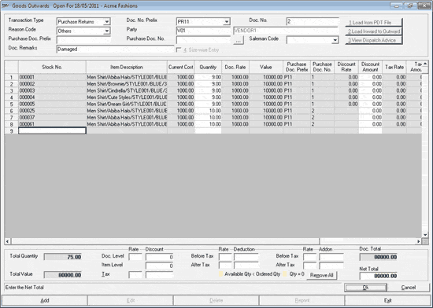

The Goods Outwards window is as shown.

Transaction Type: Select the transaction type from the list. The list displays the transaction types Purchase Returns, Transfers Out and Miscellaneous Issue based on the configuration.
Doc. No. Prefix: Depending on the type of transaction selected, the document prefix for the current document is displayed.
Doc. No.: Displays the serial number, based on the prefix, for the current document.
Reason Code: Select the reason for the outward transaction. The reason codes are as per the configuration in the General Lookup catalogue.
Party Code: Enter the party code. Party varies based on the transaction type selected. Alternatively, press F2 to display the list of party codes and names and select the appropriate party code.
The fields Purchase Doc. Prefix and Purchase Doc. No. are enabled if the transaction type selected is Purchase Returns. You can return items with reference to purchase documents, or without any reference. When returning items with reference against purchase documents, you may select the items after setting purchase documents for reference, or select the reference document after selecting the item.
Purchase Doc. Prefix: Enter the purchase document prefix, if there is only one purchase document involved.
Purchase Doc. No.: Enter the purchase document number, if there is only one purchase document involved.
In case you need to select multiple purchase
documents, click  to
open the Purchase
Document Browse window.
to
open the Purchase
Document Browse window.
Note:
On clicking  if item details are already present in the
grid, the following message is displayed. Select as per your requirement.
if item details are already present in the
grid, the following message is displayed. Select as per your requirement.

Salesman Code: Select the salesman code.
Doc Remarks: Enter the document remarks.
Size-wise Entry: Select to generate the outwards document based on sizes. Click here to view a sample grid.
Load from PDT File: This option is available based on configuration. Click to load item details from a text file.
If the PDT file format is not configured, the Browse window opens. Select the required PDT file format.
The Open window is displayed for file selection. Choose the file and click Open. The item details will be displayed in the grid.
Load Inward to Outward: This option is available based on configuration. This is useful to send all items in an inward document to any of the stores in the chain. Click to send all the items received against a goods inward document to an outward document. On clicking the button, the Load Inward to Outward window is displayed.
View Dispatch Advice: This option is available only if any Dispatch Advice is available. Click to select the dispatch advices.
The grid displays the item details, if selected. Otherwise, you may scan the stock number, enter the stock number, or press F2 in the Stock No. column to select items using the Advanced Item Search window.
If the selected transaction type is purchase return, and the reference documents are selected, items are validated against the documents. Otherwise, a list of documents are displayed for selection as soon as an item number is entered. Select the required documents. In order to do a transaction without reference, press Esc.
Note:
·When Dispatch Advice or Purchase document is loaded, the selected document prefix and document numbers are displayed in the grid.
· When PDT file is loaded, if sufficient quantity is not available, Shoper gives a warning message and the stock number is skipped after writing to a log file.
· In the cases of: inward to outward, item details for purchase return loaded from multiple purchase documents, and dispatch advice loading, stock numbers having insufficient quantity are shown in different colours. If available quantity is less, you can change the quantity as per availability, and remove items with zero quantity.
Enter the item quantity being transacted. This is validated against the quantity in the reference document. If LSQ is enabled, it is taken as the transaction quantity. For returning more quantity, you need to scan different pieces individually. When duplicate items are entered, if all details in the lines match, duplicate entries are clubbed and quantity and values are computed.
Note:
· Even if LSQ is enabled, when loading details from PDT file, the quantities in the PDT file are loaded.
· Quantities that are not multiples of the corresponding LSQ is allowed based on configuration at the time of installation.
Validation of transaction quantity against stock on hand is done based on configuration.
Total Quantity: Displays the total quantity of the items selected in the grid.
Total Value: Displays the total value of the items displayed in the grid.
Doc. Level (Discount): Enter the document level discounts, if any, as rate or amount. If rate is entered the discount amount is calculated automatically and displayed; and vice versa.
Item Level (Discount): Displays the total value of item level discount.
Tax: Displays the total tax amount if entered at item level in the grid. If not, the values can be provided at the document level. If rate is entered the tax amount is calculated automatically and displayed; and vice versa.
Deduction
Before Tax: Displays the total deduction amount before tax, if entered at item level in the grid. If not, the values can be provided at the document level. If rate is entered the deduction amount is calculated automatically and displayed; and vice versa.
After Tax: Displays the total deduction amount after tax, if entered at item level in the grid. If not, the values can be provided at the document level. If rate is entered the deduction amount is calculated automatically and displayed; and vice versa.
Addon
Before Tax: Displays the total addon amount before tax, if entered at item level in the grid. If not, the values can be provided at the document level. If rate is entered the addon amount is calculated automatically and displayed; and vice versa.
After Tax: Displays the total addon amount after tax, if entered at item level in the grid. If not, the values can be provided at the document level. If rate is entered the addon amount is calculated automatically and displayed; and vice versa.
Doc. Total: Displays the total of all net values of listed items, after considering the discounts/ tax/ deductions/ add-ons at the document level, if any.
Net Total: Enter the rounded net value for the document, if required. The difference would be adjusted against Addon after tax or Deduction after tax, and the Doc. Total is adjusted accordingly. A message is displayed suggesting an adjustment in the Net Total.